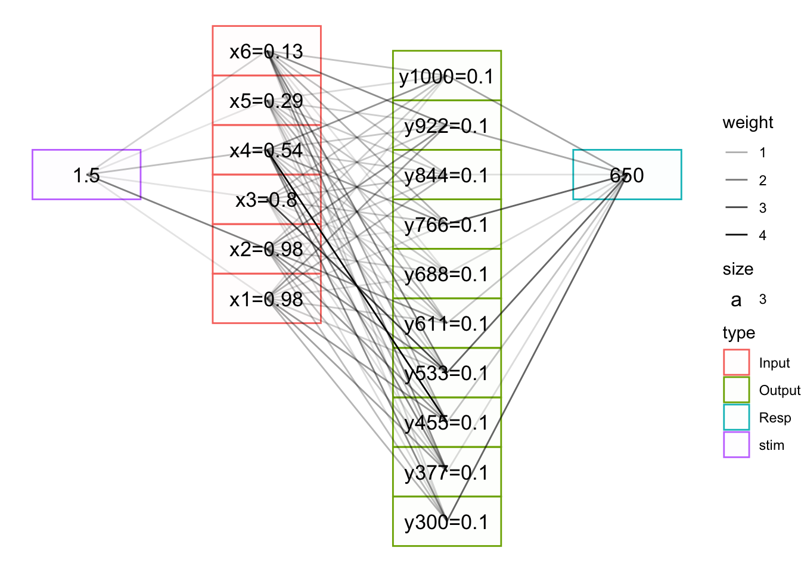
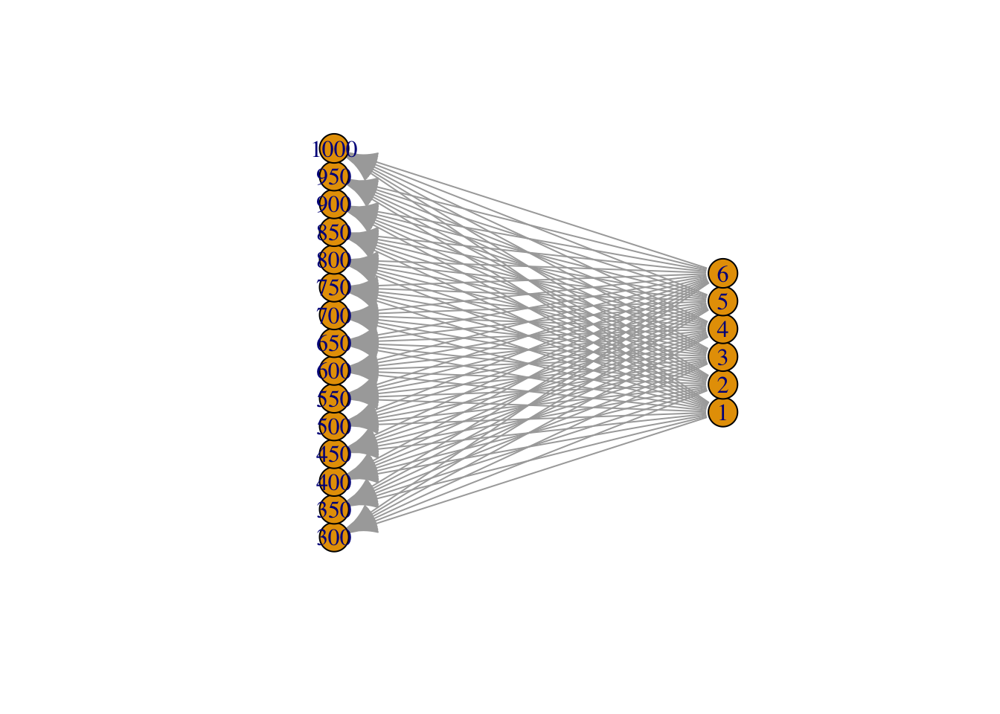
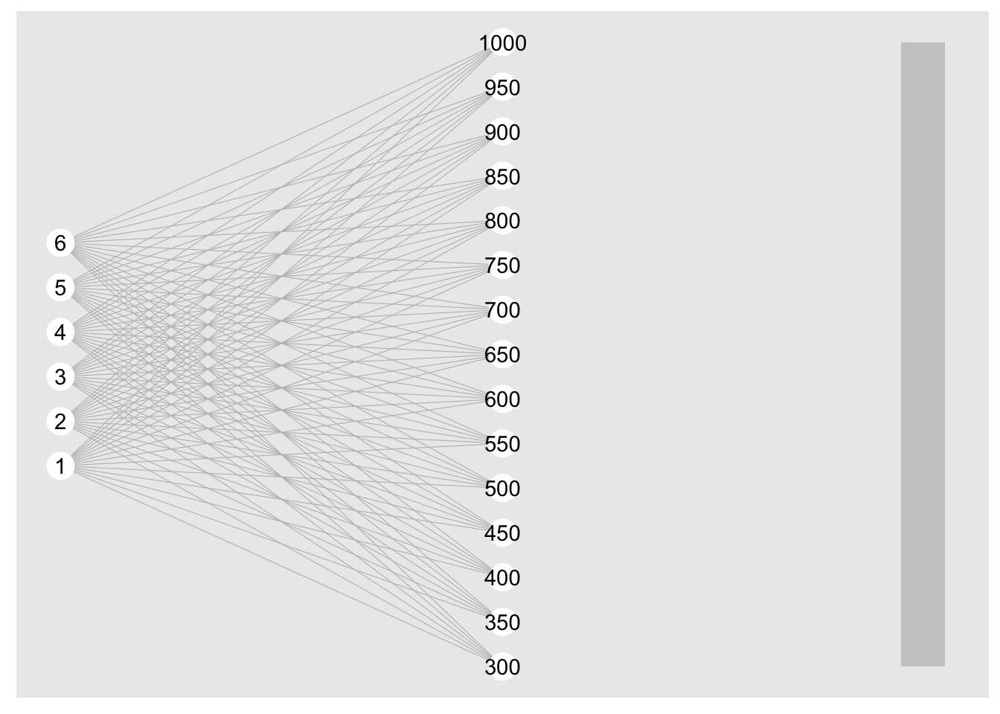
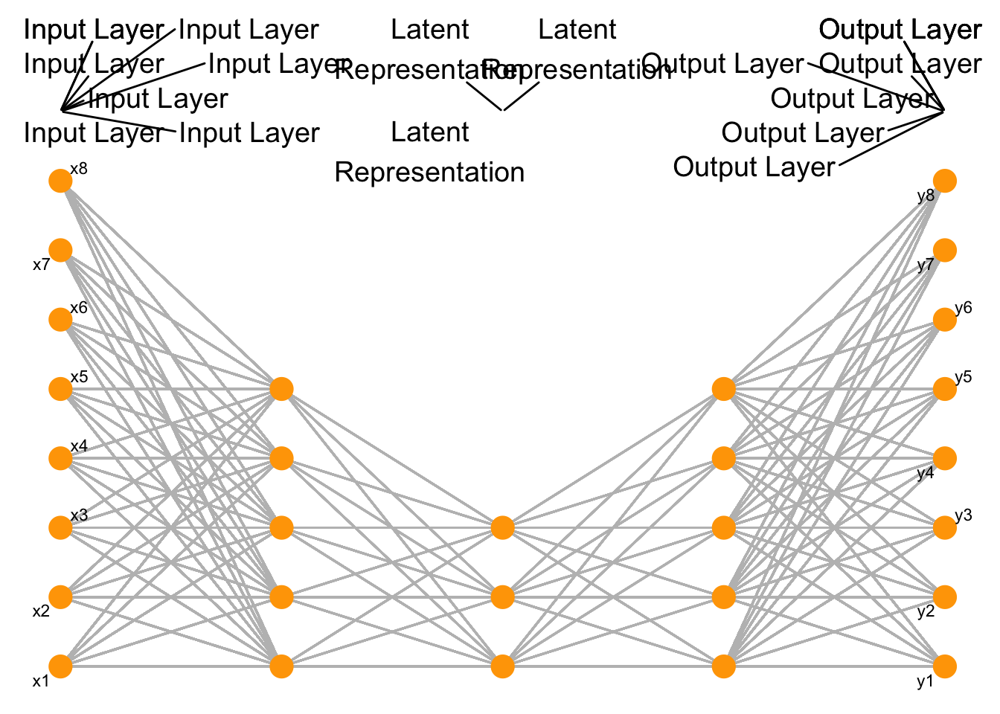
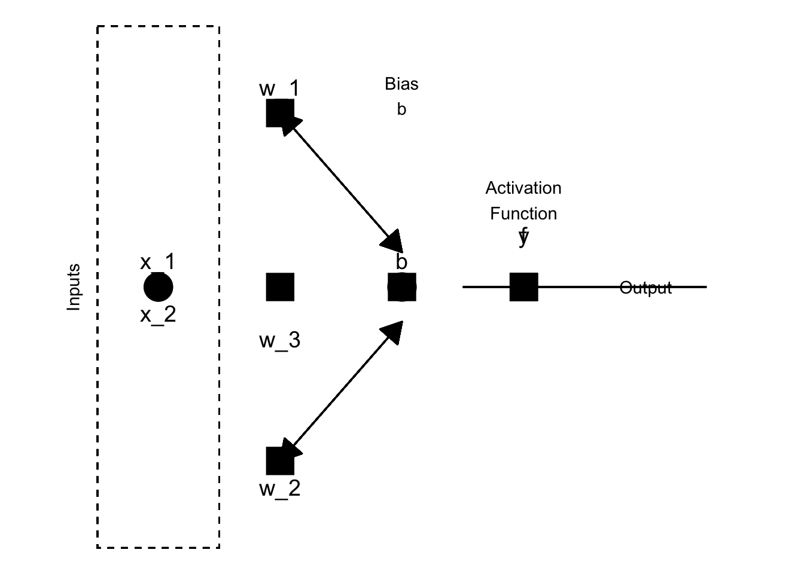
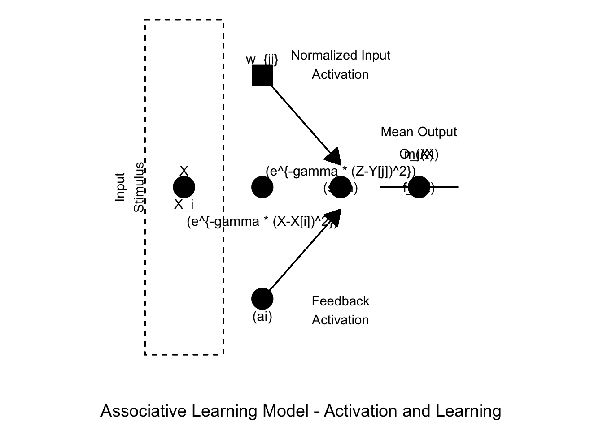
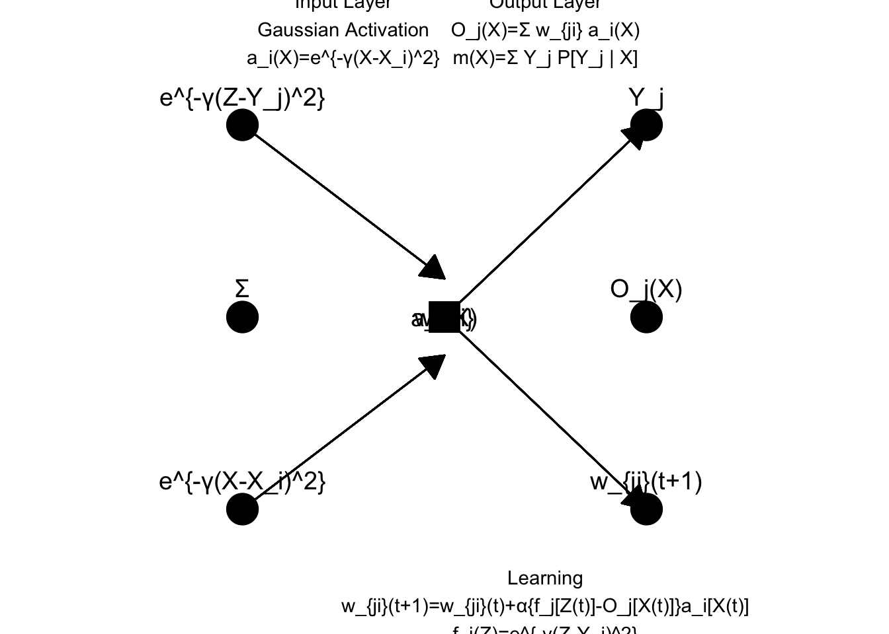

Code
#lapply(c('tidyverse','data.table','igraph','ggraph','kableExtra'),library,character.only=TRUE))
pacman::p_load(tidyverse,data.table,igraph,ggraph,kableExtra,DiagrammeR,png, plantuml) #lapply(c('tidyverse','data.table','igraph','ggraph','kableExtra'),library,character.only=TRUE))
pacman::p_load(tidyverse,data.table,igraph,ggraph,kableExtra,DiagrammeR,png, plantuml) uml <- '@startuml
skinparam ranksep 20
skinparam dpi 125
skinparam packageTitleAlignment left
rectangle "Input Layer" {
(Input1)
(Input2)
}
rectangle "Output Layer" {
(Output1)
(Output2)
(Output3)
}
rectangle "<b>ALM (Associative Learning Model)</b>" as ALM_model
(Input1) ..> (Output1) : w_{11}
(Input1) ..> (Output2) : w_{12}
(Input1) ..> (Output3) : w_{13}
(Input2) ..> (Output1) : w_{21}
(Input2) ..> (Output2) : w_{22}
(Input2) ..> (Output3) : w_{23}
ALM_model ==> (Input Layer)
(Input Layer) --> (Output Layer)
@enduml
'
uml <- plantuml(uml)
plot(x=uml)
[1] "/var/folders/r1/c92xp9t13094kv05vft2mbzw0000gn/T//RtmpDQ2JVS/plantuml.e77d28bb8fbd.svg"alm_model_with_equations <- '
@startuml
skinparam ranksep 20
skinparam dpi 125
skinparam packageTitleAlignment left
rectangle "Input Layer" {
(Input1)
(Input2)
}
rectangle "Output Layer" {
(Output1)
(Output2)
(Output3)
}
(Input1) ..> (Output1) : w_{11}
(Input1) ..> (Output2) : w_{12}
(Input1) ..> (Output3) : w_{13}
(Input2) ..> (Output1) : w_{21}
(Input2) ..> (Output2) : w_{22}
(Input2) ..> (Output3) : w_{23}
rectangle "<b>ALM (Associative Learning Model)</b>" as ALM_model
ALM_model ==> (Input Layer)
(Input Layer) --> (Output Layer)
note right of (Input Layer)
<math>a_i(X)=e^{-\\gamma \\cdot(X-X_i)^2}</math>
<math>Normalized: \\frac{a_i(X)}{\\sum a_i(X)}</math>
end note
note right of (Output Layer)
blank
end note
@enduml
'
# Pass the PlantUML code to plantuml function
alm_model_with_equations <- plantuml(alm_model_with_equations)
plot(x=alm_model_with_equations)
[1] "/var/folders/r1/c92xp9t13094kv05vft2mbzw0000gn/T//RtmpDQ2JVS/plantuml.e77d547cc13a.svg"nInput=6
nOutput=10
inNodes <- seq(1,nInput,1) %>% as.integer()
outNodes <- seq(300,1000,length.out=nOutput)%>% as.integer()
weight.mat <<- matrix(0.001,nrow=nOutput,ncol=nInput) # weights initialized to 0 (as in Delosh 1997)
stim <- 1.5
c=.1
inAct <- round(exp(-c*((inNodes-stim)^2)),2)
inActLab <- paste0("x",inNodes,"=",inAct)
outAct <- weight.mat %*% inAct
output.probability <<- outAct/sum(outAct)
outLab=paste0("y",outNodes,"=",round(output.probability,2))
mean.response <<- round(sum(outNodes * output.probability),0)
resp <- mean.response
inFlow <- tibble(expand.grid(from=stim,to=inActLab)) %>% mutate_all(as.character)
outFlow <- tibble(expand.grid(from=outLab,to=mean.response)) %>% mutate_all(as.character)
gd <- tibble(expand.grid(from=inActLab,to=outLab)) %>% mutate_all(as.character) %>%
rbind(inFlow,.) %>% rbind(.,outFlow)
xInc <- .3
yInc=.5
g = graph_from_data_frame(gd,directed=TRUE)
coords2=layout_as_tree(g)
colnames(coords2)=c("y","x")
odf <- as_tibble(coords2) %>%
mutate(label=vertex_attr(g,"name"),
type=c("stim",rep("Input",nInput),rep("Output",nOutput),"Resp"),
x=x*-1) %>%
mutate(y=ifelse(type=="Resp",0,y),xmin=x-xInc,xmax=x+xInc,ymin=y-yInc,ymax=y+yInc)
plot_edges = gd %>% mutate(id=row_number()) %>%
pivot_longer(cols=c("from","to"),names_to="s_e",values_to=("label")) %>%
mutate(label=as.character(label)) %>%
group_by(id) %>%
mutate(weight=sqrt(rnorm(1,mean=0,sd=10)^2)/10) %>%
left_join(odf,by="label") %>%
mutate(xmin=xmin+.02,xmax=xmax-.02)
ggplot() + geom_rect(data = odf,
mapping = aes(xmin = xmin, ymin = ymin,
xmax = xmax, ymax = ymax,
fill = type, colour = type),alpha = 0.01) +
geom_text(data=odf,aes(x=x,y=y,label=label,size=3)) +
geom_path(data=plot_edges,mapping=aes(x=x,y=y,group=id,alpha=weight)) +
# geom_rect(aes(xmin=-1.05,xmax=-.95,ymin=-10,ymax=5),color="red",alpha=.1)+
# geom_rect(aes(xmin=-0.05,xmax=.05,ymin=-10,ymax=5),color="blue",alpha=.1) +
theme_void()
inNodes <- seq(1,6,1) %>% as.integer()
outNodes <- seq(300,1000,50)%>% as.integer()
da <- data.frame(expand.grid(inNodes,outNodes)) %>% magrittr::set_colnames(c("input","output"))
da <- da %>% mutate_all(as.character)
m = graph_from_data_frame(da, directed = TRUE)
coords = layout_with_sugiyama(m)
colnames(coords$layout) = c("y", "x")
coords$layout=coords$layout[,c("x","y")]
plot(m,layout=coords)
ggraph(m,layout=coords$layout)+
geom_edge_link0(width=0.2,colour="grey")+
geom_node_point(col="white",size=6)+scale_x_reverse()+
geom_node_text(aes(label=name)) +
# draw rectangle that covers input layer at x=1, min y is min of coords$y and max y is max of coords$y
annotate("rect",xmin=0,xmax=.1,ymin=min(coords$layout[,2]),ymax=max(coords$layout[,2]),fill="grey",alpha=0.7)
geom_rect: linejoin = mitre, na.rm = FALSE
stat_identity: na.rm = FALSE
position_identity library(tidyverse)
library(ggforce)
theme_set(theme_grey() +
theme_void() +
theme(plot.margin = margin(0, 5.5, 0, 5.5)))
# Parameters
input_x <- c(1, 2)
output_x <- c(1.5, 2.5, 3.5)
input_y <- 3
output_y <- 1
activation_levels <- c(0.2, 0.7, 0.5)
# Input Layer
input_layer <- tibble(x = input_x, y = rep(input_y, length(input_x)))
# Output Layer
output_layer <- tibble(x = output_x, y = rep(output_y, length(output_x)), activation = activation_levels)
# Gaussian Activation
gaussian_activation <- tibble(
x = seq(from = 0, to = 3, by = 0.01),
y = exp(-2 * (x - 1)^2) + 2.5,
x2 = x,
y2 = exp(-2 * (x - 2)^2) + 2.5
)
# Plot
p <- ggplot() +
# Input nodes
geom_point(data = input_layer, aes(x = x, y = y), size = 4, color = 'green') +
annotate("text", x = input_x, y = rep(input_y, length(input_x)) + 0.3, label = c("Input #1", "Input #2")) +
# Gaussian Activations
geom_line(data = gaussian_activation, aes(x = x, y = y), color = 'blue') +
geom_line(data = gaussian_activation, aes(x = x2, y = y2), color = 'blue') +
# Connections
geom_segment(data = expand.grid(input_x, output_x), aes(x = Var1, xend = Var2, y = input_y, yend = output_y), arrow = arrow(type = 'closed', length = unit(0.2, 'inches'))) +
# Output nodes
geom_point(data = output_layer, aes(x = x, y = y), size = 4, color = 'red') +
geom_bar(data = output_layer, aes(x = x, y = activation), stat = 'identity', position = 'dodge', fill = 'red', alpha = 0.3, width = 0.3) +
annotate("text", x = output_x, y = rep(output_y, length(output_x)) - 0.3, label = c("Output #1", "Output #2", "Output #3")) +
# Equation annotations
annotate("text", x = 0.5, y = input_y + 1, label = "1", parse = TRUE) +
annotate("text", x = 1.5, y = output_y - 1, label = "2 ", parse = TRUE) +
# Input stimulus and output response
annotate("text", x = mean(input_x), y = input_y + 1.3, label = "Input Stimulus") +
annotate("text", x = mean(output_x), y = output_y - 1.3, label = "Output Response") +
# Coordinate limits and axis labels
coord_cartesian(xlim = c(0, 4), ylim = c(-1, 5)) +
labs(x = "", y = "") +
theme_void()
# Show the plot
print(p)
library(ggplot2)
library(ggrepel)
neural_network_plot <- function(layers, layer_labels = NULL, node_labels = c('x', 'y')) {
data <- expand.grid(layer = seq_along(layers), node = 1:max(layers))
data <- data[data$node <= layers[data$layer], ]
links <- data.frame()
for (i in 1:(length(layers) - 1)) {
start <- subset(data, layer == i)
end <- subset(data, layer == i + 1)
links <- rbind(links, expand.grid(from = start$node, to = end$node, from_layer = start$layer, to_layer = end$layer))
}
p <- ggplot() +
geom_segment(data = links, aes(x = from_layer, xend = to_layer, y = from, yend = to), color = 'grey') +
geom_point(data = data, aes(x = layer, y = node), size = 5, color = 'orange') +
theme_minimal() +
theme(axis.text = element_blank(),
axis.ticks = element_blank(),
panel.grid = element_blank(),
axis.title = element_blank())
if (!is.null(layer_labels)) {
data$layer_label <- layer_labels[data$layer]
p <- p + geom_text_repel(data = data, aes(x = layer, y = max(layers) + 1, label = layer_label), size = 5, nudge_y = 1)
}
if (!is.null(node_labels)) {
data$node_label <- ifelse(data$layer == 1, paste0(node_labels[1], '', data$node),
ifelse(data$layer == length(layers), paste0(node_labels[2], '', data$node), ''))
p <- p + geom_text_repel(data = data, aes(x = layer, y = node, label = node_label), size = 3)
}
return(p)
}
#Example usage
layers <- c(8, 5, 3, 5, 8)
layer_labels <- c('Input Layer', '', 'Latent\nRepresentation', '', 'Output Layer')
neural_network_plot(layers, layer_labels)
library(ggplot2)
data <- data.frame(
x = c(1, 2, 2, 3, 4, 4, 1, 2, 3, 4),
y = c(0, 1, -1, 0, 0, 0, 0, 0, 0, 0),
label = c("x_1", "w_1", "w_2", "", "f", "y", "x_2", "w_3", "b", ""),
shape = c("circle", "square", "square", "circle", "square", "square", "circle", "square", "square", "square"),
text_y = c(0.15, 0.15, -0.15, 0, 0.3, 0.3, -0.15, -0.3, 0.15, 0)
)
data$shape <- factor(data$shape, levels = c("circle", "square"))
ggplot(data, aes(x = x, y = y)) +
geom_point(aes(shape = shape), size = 8) +
geom_text(aes(label = label, y = y + text_y), size = 5) +
scale_shape_manual(values = c("circle" = 19, "square" = 15)) +
geom_segment(aes(x = 2, xend = 3, y = 1, yend = 0.2), arrow = arrow(type = "closed", length = unit(0.2, "inches"))) +
geom_segment(aes(x = 2, xend = 3, y = -1, yend = -0.2), arrow = arrow(type = "closed", length = unit(0.2, "inches"))) +
geom_segment(aes(x = 3, xend = 2, y = 0.2, yend = 1), arrow = arrow(type = "closed", length = unit(0.2, "inches"))) +
geom_segment(aes(x = 3, xend = 2, y = -0.2, yend = -1), arrow = arrow(type = "closed", length = unit(0.2, "inches"))) +
geom_segment(aes(x = 3.5, xend = 4.5, y = 0, yend = 0)) +
geom_segment(aes(x = 4.5, xend = 5.5, y = 0, yend = 0)) +
annotate("text", x = 4, y = 0.5, label = "Activation\nFunction", hjust = 0.5) +
annotate("text", x = 5, y = 0, label = "Output", hjust = 0.5) +
annotate("text", x = 3, y = 1.1, label = "Bias\nb", hjust = 0.5) +
geom_rect(aes(xmin = 0.5, xmax = 1.5, ymin = -1.5, ymax = 1.5), color = "black", linetype = "dashed", fill = NA) +
annotate("text", x = 0.3, y = 0, label = "Inputs", angle = 90) +
theme_void() +
xlim(0, 6) +
theme(legend.position = "none")
data <- data.frame(
x = c(2, 3, 3, 4, 5, 5, 2, 3, 4, 5),
y = c(0, 1, -1, 0, 0, 0, 0, 0, 0, 0),
label = c("X", "w_{ji}", "(ai)", "(sum)", "O_j(X)", "m(X)", "X_i", "(e^{-gamma * (X-X[i])^2})", "(e^{-gamma * (Z-Y[j])^2})", "f_j(Z)"),
shape = c("circle", "square", "circle", "circle", "circle", "circle", "circle", "circle", "circle", "circle"),
text_y = c(0.15, 0.15, -0.15, 0, 0.3, 0.3, -0.15, -0.3, 0.15, 0)
)
data$shape <- factor(data$shape, levels = c("circle", "square"))
ggplot(data, aes(x = x, y = y)) +
geom_point(aes(shape = shape), size = 8) +
geom_text(aes(label = label, y = y + text_y), size = 4) +
scale_shape_manual(values = c("circle" = 19, "square" = 15)) +
geom_segment(aes(x = 3, xend = 4, y = 1, yend = 0.2), arrow = arrow(type = "closed", length = unit(0.2, "inches"))) +
geom_segment(aes(x = 3, xend = 4, y = -1, yend = -0.2), arrow = arrow(type = "closed", length = unit(0.2, "inches"))) +
geom_segment(aes(x = 4.5, xend = 5.5, y = 0, yend = 0)) +
annotate("text", x = 5, y = 0.5, label = "Mean Output", hjust = 0.5) +
annotate("text", x = 4, y = 1.1, label = "Normalized Input\nActivation", hjust = 0.5) +
annotate("text", x = 4, y = -1.1, label = "Feedback\nActivation", hjust = 0.5) +
geom_rect(aes(xmin = 1.5, xmax = 2.5, ymin = -1.5, ymax = 1.5), color = "black", linetype = "dashed", fill = NA) +
annotate("text", x = 1.3, y = 0, label = "Input\nStimulus", angle = 90) +
annotate("text", x = 3.5, y = -2, label = "Associative Learning Model - Activation and Learning", size = 5, hjust = 0.5) +
theme_void() +
xlim(0, 7) +
theme(legend.position = "none")
data <- data.frame(
x = c(rep(2, 3), rep(4, 2), rep(6, 3)),
y = c(-1, 0, 1, 0, 0, -1, 0, 1),
label = c("e^{-(X-X_i)^2}", "", "e^{-(Z-Y_j)^2}", "w_{ji}", "a_i(X)", "w_{ji}(t+1)", "O_j(X)", "Y_j"),
shape = c("circle", "circle", "circle", "square", "square", "circle", "circle", "circle"),
text_y = c(0.15, 0.15, 0.15, 0, 0, 0.15, 0.15, 0.15)
)
data$shape <- factor(data$shape, levels = c("circle", "square"))
ggplot(data, aes(x = x, y = y)) +
geom_point(aes(shape = shape), size = 8) +
geom_text(aes(label = label, y = y + text_y), size = 5) +
scale_shape_manual(values = c("circle" = 19, "square" = 15)) +
geom_segment(aes(x = 2, xend = 4, y = 1, yend = 0.2), arrow = arrow(type = "closed", length = unit(0.2, "inches"))) +
geom_segment(aes(x = 2, xend = 4, y = -1, yend = -0.2), arrow = arrow(type = "closed", length = unit(0.2, "inches"))) +
geom_segment(aes(x = 4, xend = 6, y = 0, yend = 1), arrow = arrow(type = "closed", length = unit(0.2, "inches"))) +
geom_segment(aes(x = 4, xend = 6, y = 0, yend = -1), arrow = arrow(type = "closed", length = unit(0.2, "inches"))) +
annotate("text", x = 3, y = 1.5, label = "Input Layer\nGaussian Activation\na_i(X)=e^{-(X-X_i)^2}", hjust = 0.5) +
annotate("text", x = 5, y = 1.5, label = "Output Layer\nO_j(X)= w_{ji} a_i(X)\nm(X)= Y_j P[Y_j | X]", hjust = 0.5) +
annotate("text", x = 5, y = -1.5, label = "Learning\nw_{ji}(t+1)=w_{ji}(t)+{f_j[Z(t)]-O_j[X(t)]}a_i[X(t)]\nf_j(Z)=e^{-(Z-Y_j)^2}", hjust = 0.5) +
theme_void() +
xlim(0, 8) +
theme(legend.position = "none")
# Load the required libraries
library(ggplot2)
library(ggpp)
library(tidyverse)
library(patchwork)
# Create the Gaussian curve plots for each input node
input_node_1 <- ggplot(data.frame(x = seq(-3, 3, length.out = 100)), aes(x)) +
stat_function(fun = dnorm, args = list(mean = 1, sd = .4)) +
theme_void() +
theme(plot.margin = margin(0, 0, 0, 0))
input_node_2 <- ggplot(data.frame(x = seq(-3, 3, length.out = 100)), aes(x)) +
stat_function(fun = dnorm, args = list(mean = 2, sd = .4)) +
theme_void() +
theme(plot.margin = margin(0, 0, 0, 0))
input_node_3 <- ggplot(data.frame(x = seq(-3, 3, length.out = 100)), aes(x)) +
stat_function(fun = dnorm, args = list(mean = 3, sd = .4)) +
theme_void() +
theme(plot.margin = margin(0, 0, 0, 0))
# Create the main plot
main_plot <- ggplot() +
theme_void() +
theme(plot.margin = margin(0, 0, 0, 0)) +
annotate("plot_npc", npcx = 0.2, npcy = 0.8, label = input_node_1) +
annotate("plot_npc", npcx = 0.5, npcy = 0.8, label = input_node_2) +
annotate("plot_npc", npcx = 0.8, npcy = 0.8, label = input_node_3) +
annotate("text", x = 0.2, y = 0.7, label = "Input Node 1") +
annotate("text", x = 0.5, y = 0.7, label = "Input Node 2") +
annotate("text", x = 0.8, y = 0.7, label = "Input Node 3") +
annotate("text", x = 0.5, y = 0.6, label = "Input Layer", fontface = "bold") +
annotate("text", x = 0.5, y = 0.3, label = "Output Layer", fontface = "bold") +
annotate("text", x = 0.5, y = 0.1, label = "ALM + EXAM Response", fontface = "bold")
# Print the main plot
print(main_plot)
# Create the Gaussian curve plots for each input node
input_node_1 <- ggplot(data.frame(x = seq(-3, 3, length.out = 100)), aes(x)) +
stat_function(fun = dnorm, args = list(mean = 0, sd = 1)) +
theme_void() +
theme(plot.margin = margin(0, 0, 0, 0))
input_node_2 <- ggplot(data.frame(x = seq(-3, 3, length.out = 100)), aes(x)) +
stat_function(fun = dnorm, args = list(mean = 2.2, sd = 1)) +
theme_void() +
theme(plot.margin = margin(0, 0, 0, 0))
input_node_3 <- ggplot(data.frame(x = seq(-3, 3, length.out = 100)), aes(x)) +
stat_function(fun = dnorm, args = list(mean = 4.3, sd = .1)) +
theme_void() +
theme(plot.margin = margin(0, 0, 0, 0))
# Create the main plot
main_plot <- ggplot() +
theme_void() +
theme(plot.margin = margin(0, 0, 0, 0)) +
annotate("plot_npc", npcx = 0.2, npcy = 0.8, label = input_node_1, width = 0.1, height = 0.1) +
annotate("plot_npc", npcx = 0.5, npcy = 0.8, label = input_node_2, width = 0.1, height = 0.1) +
annotate("plot_npc", npcx = 0.8, npcy = 0.8, label = input_node_3, width = 0.1, height = 0.1) +
annotate("text", x = 0.2, y = 0.9, label = "Input Node 1") +
annotate("text", x = 0.5, y = 0.9, label = "Input Node 2") +
annotate("text", x = 0.8, y = 0.9, label = "Input Node 3") +
annotate("text", x = 0.5, y = 0.6, label = "Input Layer", fontface = "bold") +
annotate("rect", xmin = 0.1, xmax = 0.3, ymin = 0.4, ymax = 0.5, fill = "grey80") +
annotate("rect", xmin = 0.4, xmax = 0.6, ymin = 0.4, ymax = 0.5, fill = "grey80") +
annotate("rect", xmin = 0.7, xmax = 0.9, ymin = 0.4, ymax = 0.5, fill = "grey80") +
annotate("text", x = 0.5, y = 0.3, label = "Output Layer", fontface = "bold") +
annotate("text", x = 0.5, y = 0.1, label = "ALM + EXAM Response", fontface ="bold")
print(main_plot)
# Create the Gaussian curve plots for each input node
input_node_1 <- ggplot(data.frame(x = seq(-3, 3, length.out = 100)), aes(x)) +
stat_function(fun = dnorm, args = list(mean = 0, sd = .41)) +
theme_void() +
theme(plot.margin = margin(0, 0, 0, 0)) +
ggtitle("Input Node 1")
input_node_2 <- ggplot(data.frame(x = seq(-3, 3, length.out = 100)), aes(x)) +
stat_function(fun = dnorm, args = list(mean = 2, sd = .41)) +
theme_void() +
theme(plot.margin = margin(0, 0, 0, 0)) +
ggtitle("Input Node 2")
input_node_3 <- ggplot(data.frame(x = seq(-3, 3, length.out = 100)), aes(x)) +
stat_function(fun = dnorm, args = list(mean = 3, sd = .41)) +
theme_void() +
theme(plot.margin = margin(0, 0, 0, 0)) +
ggtitle("Input Node 3")
# Create the output nodes
output_node_1 <- ggplot() +
theme_void() +
theme(plot.margin = margin(0, 0, 0, 0)) +
annotate("rect", xmin = -1, xmax = 1, ymin = -1, ymax = 1, fill = "blue") +
ggtitle("Output Node 1")
output_node_2 <- ggplot() +
theme_void() +
theme(plot.margin = margin(0, 0, 0, 0)) +
annotate("rect", xmin = -1, xmax = 1, ymin = -1, ymax = 1, fill = "blue") +
ggtitle("Output Node 2")
# Combine the input and output nodes using patchwork
input_layer <- input_node_1 + input_node_2 + input_node_3
output_layer <- output_node_1 + output_node_2
# Create the connection matrix
connection_matrix <- ggplot() +
theme_void() +
theme(plot.margin = margin(0, 0, 0, 0)) +
annotate("segment", x = 0.2, xend = 0.8, y = 0.8, yend = 0.2, arrow = arrow()) +
annotate("segment", x = 0.5, xend = 0.8, y = 0.8, yend = 0.2, arrow = arrow()) +
annotate("segment", x = 0.8, xend = 0.8, y = 0.8, yend = 0.2, arrow = arrow())
# Combine the input layer, connection matrix, and output layer
main_plot <- input_layer / connection_matrix / output_layer
# Print the main plot
print(main_plot)
# Function to create an input node
create_input_node <- function(mean, position) {
ggplot(data.frame(x = seq(-3, 3, length.out = 100)), aes(x)) +
stat_function(fun = dnorm, args = list(mean = mean, sd = .3)) +
theme_void() +
theme(plot.margin = margin(0, 0, 0, 0)) +
coord_cartesian(xlim = c(0, 3), ylim = c(0, 0.5)) + coord_flip()+
labs(title = paste("Input Node", position)) +
theme(plot.title = element_text(hjust = 0.5))
}
# Function to create an output node
create_output_node <- function(position) {
ggplot() +
theme_void() +
theme(plot.margin = margin(0, 0, 0, 0)) +
annotate("rect", xmin = -1, xmax = 1, ymin = -1, ymax = 1, fill = "grey80") +
labs(title = paste("Output Node", position)) +
theme(plot.title = element_text(hjust = 0.5))
}
create_input_layer <- function(n) {
input_plots <- map(1:n, ~create_gaussian_plot(.x))
input_layer <- wrap_plots(input_plots, ncol = 1) + coord_flip()
return(input_layer)
}
# Create the input nodes
input_nodes <- map(1:3, ~create_input_node(.x, .x))
# Create the output nodes
output_nodes <- map(1:4, ~create_output_node(.x))
## Create the connection matrix
connection_matrix <- ggplot() +
theme_void() +
theme(plot.margin = margin(0, 0, 0, 0)) +
annotate("segment", x = 1, xend = 2, y = rep(1:3, each = 4), yend = rep(1:4, times = 3), arrow = arrow())
# Combine the plots
input_layer <- wrap_plots(input_nodes,byrow=FALSE,ncol=1)
output_layer <- wrap_plots(output_nodes, ncol = 1)
main_plot <- input_layer + connection_matrix + output_layer + plot_layout(ncol = 3)
# Print the main plot
print(main_plot)
combined_plot <- input_layer + connection_matrix + output_layer +
plot_layout(ncol = 3)
print(combined_plot)
print(input_layer)# Load the required libraries
library(ggplot2)
library(ggpp)
library(patchwork)
library(tidyverse)
# Function to create the input layer
create_input_layer <- function(n_nodes, stimulus = 0, gamma = 5) {
# Create a data frame with the x values and node means
df <- expand.grid(x = seq(-3, 3, length.out = 100),
mean = seq(-2, 1.5, length.out = n_nodes)) %>%
mutate(noisyMean=map(mean,~dnorm(.x,mean,sd=.5)))
df <- df %>%
mutate(distance = abs(x - stimulus),
noise = rnorm(n(), sd = 0.05),
max_activation = exp(-gamma * distance^2) + noise,
y = max_activation * exp(-gamma * (x - mean)^2))
# Create the plot
ggplot(df, aes(x, y, group = mean)) +
geom_line() +
geom_smooth()+
coord_cartesian(xlim = c(-2, 2), ylim = c(0, 1)) +
labs(title = "Input Layer") +
theme(plot.title = element_text(hjust = 0.5))
}
# Function to create an output node
create_output_node <- function(position) {
ggplot() +
theme_void() +
theme(plot.margin = margin(0, 0, 0, 0)) +
annotate("rect", xmin = -1, xmax = 1, ymin = -1, ymax = 1, fill = "grey80") +
labs(title = paste("Output Node", position)) +
theme(plot.title = element_text(hjust = 0.5))
}
# Create the input layer
input_layer <- create_input_layer(3)
# Create the output nodes
output_nodes <- map(1:4, ~create_output_node(.x))
# Create the connection matrix
connection_matrix <- ggplot() +
theme_void() +
theme(plot.margin = margin(0, 0, 0, 0)) +
annotate("segment", x = 1, xend = 2, y = 1:3, yend = rep(1:4, each = 3), arrow = arrow())
# Combine the plots
output_layer <- wrap_plots(output_nodes, ncol = 1)
main_plot <- input_layer + connection_matrix + output_layer + plot_layout(ncol = 3)
# Print the main plot
print(main_plot)# Load the visNetwork package
library(visNetwork)
# Define the nodes
nodes <- data.frame(
id = c("InputLayer", "I1", "I2", "I3", "OutputLayer", "O1", "O2", "O3", "O4", "ALM", "EXAM"),
label = c("Input Layer", "Input Node 1", "Input Node 2", "Input Node 3", "Output Layer", "Output Node 1", "Output Node 2", "Output Node 3", "Output Node 4", "ALM Response", "EXAM Response"),
shape = c("box", "image", "image", "image", "box", "circle", "circle", "circle", "circle", "box", "box"),
image = c(NA, "gaussian_curve_input_node_1.png", "gaussian_curve_input_node_2.png", "gaussian_curve_input_node_3.png", NA, NA, NA, NA, NA, NA, NA)
)
# Define the edges
edges <- data.frame(
from = c("InputLayer", "I1", "I1", "I1", "I1", "I2", "I2", "I2", "I2", "I3", "I3", "I3", "I3", "OutputLayer", "OutputLayer", "ALM", "EXAM"),
to = c("I1", "O1", "O2", "O3", "O4", "O1", "O2", "O3", "O4", "O1", "O2", "O3", "O4", "ALM", "EXAM", "EXAM", "ALM"),
label = c("", "w1", "w2", "w3", "w4", "w5", "w6", "w7", "w8", "w9", "w10", "w11", "w12", "", "", "Pure ALM Model", "ALM with EXAM Response Component")
)
# Create the network diagram
visNetwork(nodes, edges, width = "100%") %>%
visNodes(shapeProperties = list(useBorderWithImage = TRUE)) %>%
visLayout(randomSeed = 2)
# Define the nodes
nodes <- data.frame(
id = c("InputLayer", "I1", "I2", "I3", "OutputLayer", "O1", "O2", "O3", "O4", "ALM", "EXAM"),
label = c("Input Layer", "<img src='gaussian_curve_input_node_1.png' />", "<img src='gaussian_curve_input_node_2.png' />", "<img src='gaussian_curve_input_node_3.png' />", "Output Layer", "Output Node 1", "Output Node 2", "Output Node 3", "Output Node 4", "ALM Response", "EXAM Response"),
shape = c("box", "circle", "circle", "circle", "box", "circle", "circle", "circle", "circle", "box", "box")
)
# Define the edges
edges <- data.frame(
from = c("InputLayer", "I1", "I1", "I1", "I1", "I2", "I2", "I2", "I2", "I3", "I3", "I3", "I3", "OutputLayer", "OutputLayer", "ALM", "EXAM"),
to = c("I1", "O1", "O2", "O3", "O4", "O1", "O2", "O3", "O4", "O1", "O2", "O3", "O4", "ALM", "EXAM", "EXAM", "ALM"),
label = c(NA, "w1", "w2", "w3", "w4", "w5", "w6", "w7", "w8", "w9", "w10", "w11", "w12", NA, NA, "Pure ALM Model", "ALM with EXAM Response Component")
)
# Create the network diagram
visNetwork(nodes, edges, width = "100%") %>%
visNodes(shapeProperties = list(useBorderWithImage = TRUE)) %>%
visLayout(randomSeed = 2)# Load the DiagrammeR package
library(DiagrammeR)
# Define the graph
grViz("
digraph ALM_EXAM {
# Graph attributes
graph [overlap = true, fontsize = 10]
# Node definitions
node [shape = box, fontname = Helvetica]
InputLayer [label = 'Input Layer']
OutputLayer [label = 'Output Layer']
ALM [label = 'ALM Response']
EXAM [label = 'EXAM Response']
node [shape = circle, fixedsize = true, width = 0.9]
I1 [label = 'Input Node 1']
I2 [label = 'Input Node 2']
I3 [label = 'Input Node 3']
O1 [label = 'Output Node 1']
O2 [label = 'Output Node 2']
O3 [label = 'Output Node 3']
O4 [label = 'Output Node 4']
# Edge definitions
InputLayer -> I1
InputLayer -> I2
InputLayer -> I3
I1 -> O1 [label = 'w1']
I1 -> O2 [label = 'w2']
I1 -> O3 [label = 'w3']
I1 -> O4 [label = 'w4']
I2 -> O1 [label = 'w5']
I2 -> O2 [label = 'w6']
I2 -> O3 [label = 'w7']
I2 -> O4 [label = 'w8']
I3 -> O1 [label = 'w9']
I3 -> O2 [label = 'w10']
I3 -> O3 [label = 'w11']
I3 -> O4 [label = 'w12']
OutputLayer -> O1
OutputLayer -> O2
OutputLayer -> O3
OutputLayer -> O4
OutputLayer -> ALM
OutputLayer -> EXAM
ALM -> EXAM [label = 'Pure ALM Model']
EXAM -> ALM [label = 'ALM with EXAM Response Component']
}
")# Load the required packages
library(ggplot2)
library(png)
# Define the Gaussian function
gaussian <- function(x, mean, sd) {
1/(sd*sqrt(2*pi)) * exp(-1/2 * ((x - mean)/sd)^2)
}
# Define the central values for the input nodes
central_values <- c(1, 2, 3)
# Define the input stimulus value
input_stimulus <- 2
# Generate a Gaussian curve image for each input node
for (i in seq_along(central_values)) {
# Define the mean and standard deviation for the Gaussian curve
mean <- central_values[i]
sd <- 1
# Generate the x values
x <- seq(mean - 3*sd, mean + 3*sd, length.out = 100)
# Generate the y values
y <- gaussian(x, mean, sd)
# Create the plot
p <- ggplot(data.frame(x, y), aes(x, y)) +
geom_line() +
theme_minimal() +
labs(x = "X", y = "Activation", title = paste("Input Node", i))
# Save the plot as a PNG image
ggsave(paste0("gaussian_curve_input_node_", i, ".png"), plot = p, width = 4, height = 3)
}grViz("digraph causal {
# Nodes
node [imagescale=true,shape = reactangle, fontname = Arial, style = filled]
iv [label = 'TRT', fillcolor = '#7FC97F']
me [label = 'Mediator', shape = ellipse]
dv [label = 'DLQI', fillcolor = '#7FC97F']
# Edges
edge [color = black, arrowhead = normal]
rankdir = LR
iv -> me
iv -> dv [label = 'DIRECT', fontcolor = '#7FC97F', color = '#7FC97F']
me -> dv
# Graph
graph [overlap = true, fontsize = 10]
}")
grViz("digraph causal {
# Nodes
node [shape = reactangle, fontname = Arial, style = filled]
iv [image='gaussian_curve_input_node_1.png',label = '', fillcolor = '#7FC97F']
me [label = 'Mediator', shape = ellipse]
dv [label = 'DLQI', fillcolor = '#7FC97F']
# Edges
edge [color = black, arrowhead = normal]
rankdir = LR
iv -> me
iv -> dv [label = 'DIRECT', fontcolor = '#7FC97F', color = '#7FC97F']
me -> dv
# Graph
graph [overlap = true, fontsize = 10]
}")# grViz('digraph structs {
# node [shape=plaintext];
#
# struct1 [label=<<TABLE>
# <TR><TD><IMG SRC="gaussian_curve_input_node_1.png"/></TD></TR>
# <TR><TD>caption</TD></TR>
# </TABLE>>];
# }')
svgDataUrl = "data:image/svg+xml;base64,"
grViz('
digraph {
node[imagescale=true, shape=circle, width=4, height=4,fontname="sans-serif",penwidth=0]
a[label=<<FONT POINT-SIZE="10">Transaction</FONT><BR/><FONT POINT-SIZE="36"><B>TRNA</B></FONT>>,image="${svgDataUrl}"]
b[label=<<FONT POINT-SIZE="10">Transaction</FONT><BR/><FONT POINT-SIZE="18"><B>TRNB</B></FONT>>,image="${svgDataUrl}"]
c[label=<<FONT POINT-SIZE="10">Transaction</FONT><BR/><FONT POINT-SIZE="24"><B>TRNC</B></FONT>>,image="${svgDataUrl}"]
a -> b
a -> c
}')
grViz('digraph { a[image=\"gaussian_curve_input_node_1\"]; }", {
images: [{ href: "gaussian_curve_input_node_1.png", width: "400px", height: "300px" }]
}');
grViz('
digraph g{
node[imagescale=true, shape=circle, width=14, height=14,fontname="sans-serif",penwidth=0]
I1[image="gaussian_curve_input_node_1.png", label=""];
}')
grViz('digraph {
ratio="fill";
size="10,10!";
margin="0,0";
node [shape=plain];
root [label=<<TABLE border="0"><TR><TD><IMG SRC="gaussian_curve_input_node_1"/></TD></TR>
<TR><TD>text under</TD></TR></TABLE>>];
}')grViz("
digraph ALM_EXAM {
# Graph attributes
graph [overlap = true, fontsize = 10, rankdir = LR]
# Node definitions
node [shape = box, fontname = Helvetica]
InputLayer [label = 'Input Layer']
OutputLayer [label = 'Output Layer']
ALM [label = 'ALM Response']
EXAM [label = 'EXAM Response']
node [shape = none, label = '']
I1 [image = 'gaussian_curve_input_node_1.png', label='']
I2 [image = 'gaussian_curve_input_node_2.png', label='']
I3 [image = 'gaussian_curve_input_node_3.png', label='']
node [shape = circle, fixedsize = true, width = 0.9]
O1 [label = 'Output Node 1']
O2 [label = 'Output Node 2']
O3 [label = 'Output Node 3']
O4 [label = 'Output Node 4']
# Edge definitions
InputLayer -> I1
InputLayer -> I2
InputLayer -> I3
I1 -> O1 [label = 'w1']
I1 -> O2 [label = 'w2']
I1 -> O3 [label = 'w3']
I1 -> O4 [label = 'w4']
I2 -> O1 [label = 'w5']
I2 -> O2 [label = 'w6']
I2 -> O3 [label = 'w7']
I2 -> O4 [label = 'w8']
I3 -> O1 [label = 'w9']
I3 -> O2 [label = 'w10']
I3 -> O3 [label = 'w11']
I3 -> O4 [label = 'w12']
OutputLayer -> O1
OutputLayer -> O2
OutputLayer -> O3
OutputLayer -> O4
OutputLayer -> ALM
OutputLayer -> EXAM
ALM -> EXAM [label = 'Pure ALM Model']
EXAM -> ALM [label = 'ALM with EXAM Response Component']
}
")DiagrammeR::grViz("digraph {
graph [layout = dot, rankdir = LR]
# define the global styles of the nodes. We can override these in box if we wish
node [shape = rectangle, style = filled, fillcolor = Linen]
data1 [label = 'Dataset 1', shape = folder, fillcolor = Beige]
data2 [label = 'Dataset 2', shape = folder, fillcolor = Beige]
process [label = 'Process \n Data']
statistical [label = 'Statistical \n Analysis']
results [label= 'Results']
# edge definitions with the node IDs
{data1 data2} -> process -> statistical -> results
}")graph LR
subgraph InputLayer
I1["Input Node 1"]
I2["Input Node 2"]
I3["Input Node 3"]
end
subgraph OutputLayer
O1["Output Node 1"]
O2["Output Node 2"]
O3["Output Node 3"]
O4["Output Node 4"]
end
I1 -->|"w1"| O1
I1 -->|"w2"| O2
I1 -->|"w3"| O3
I1 -->|"w4"| O4
I2 -->|"w5"| O1
I2 -->|"w6"| O2
I2 -->|"w7"| O3
I2 -->|"w8"| O4
I3 -->|"w9"| O1
I3 -->|"w10"| O2
I3 -->|"w11"| O3
I3 -->|"w12"| O4
style InputLayer fill:#99cc99,stroke:#333,stroke-width:2px
style OutputLayer fill:#cc99cc,stroke:#333,stroke-width:2px
IS["Input Stimulus (X)"] --> InputLayer
InputLayer -->|"Gaussian Activation (a_i)"| OutputLayer
OutputLayer --> ALM["ALM Response (m(X))"]
OutputLayer --> EXAM["EXAM Response (E[Y | X_i])"]
ALM -->|"Pure ALM Model"| EXAM
EXAM -->|"ALM with EXAM Response Component"| ALM
linkStyle 0 stroke:#2ecd71,stroke-width:2px;
linkStyle 1 stroke:#2ecd71,stroke-width:2px;
linkStyle 2 stroke:#2ecd71,stroke-width:2px;
linkStyle 3 stroke:#2ecd71,stroke-width:2px;
linkStyle 4 stroke:#2ecd71,stroke-width:2px;
linkStyle 5 stroke:#2ecd71,stroke-width:2px;
linkStyle 6 stroke:#2ecd71,stroke-width:2px;
linkStyle 7 stroke:#2ecd71,stroke-width:2px;
linkStyle 8 stroke:#2ecd71,stroke-width:2px;
linkStyle 9 stroke:#2ecd71,stroke-width:2px;
linkStyle 10 stroke:#2ecd71,stroke-width:2px;
linkStyle 11 stroke:#2ecd71,stroke-width:2px;
linkStyle 12 stroke:#2ecd71,stroke-width:2px;
linkStyle 13 stroke:#2ecd71,stroke-width:2px;
linkStyle 14 stroke:#2ecd71,stroke-width:2px;
linkStyle 15 stroke:#2ecd71,stroke-width:2px;
linkStyle 16 stroke:#2ecd71,stroke-width:2px;
linkStyle 17 stroke:#2ecd71,stroke-width:2px;
linkStyle 0 stroke:#2ecd71,stroke-width:2px;
linkStyle 1 stroke:#2ecd71,stroke-width:2px;
linkStyle 2 stroke:#2ecd71,stroke-width:2px;
linkStyle 3 stroke:#2ecd71,stroke-width:2px;
linkStyle 4 stroke:#2ecd71,stroke-width:2px;
linkStyle 5 stroke:#2ecd71,stroke-width:2px;
linkStyle 6 stroke:#2ecd71,stroke-width:2px;
linkStyle 7 stroke:#2ecd71,stroke-width:2px;
linkStyle 8 stroke:#2ecd71,stroke-width:2px;
linkStyle 9 stroke:#2ecd71,stroke-width:2px;
linkStyle 10 stroke:#2ecd71,stroke-width:2px;
linkStyle 11 stroke:#2ecd71,stroke-width:2px;
linkStyle 12 stroke:#2ecd71,stroke-width:2px;
linkStyle 13 stroke:#2ecd71,stroke-width:2px;
linkStyle 14 stroke:#2ecd71,stroke-width:2px;
linkStyle 15 stroke:#2ecd71,stroke-width:2px;
linkStyle 16 stroke:#2ecd71,stroke-width:2px;
linkStyle 17 stroke:#2ecd71,stroke-width:2px;
P5 = require("p5")
function* createSketch(sketch) {
const element = DOM.element('div');
yield element;
const instance = new P5(sketch, element, true);
try {
while (true) {
yield element;
}
} finally {
instance.remove();
}
}
createSketch(s => {
s.setup = function() {
s.createCanvas(746, 300);
s.textFont('Courgette');
s.textStyle(s.BOLD);
s.textAlign(s.CENTER, s.CENTER)
s.button = s.createButton('clear');
s.button.mousePressed(s.clearCanvas);
s.text('Click and drag to draw', s.width/2, s.height/10);
};
s.draw = function() {
if (s.mouseIsPressed) {
s.fill(0);
s.ellipse(s.mouseX, s.mouseY, 10, 10);
} else {
//s.fill(255);
}
// add text input
};
// add button to clear canvas
s.clearCanvas = function() {
s.clear();
};
// add text
// add slider
}
)